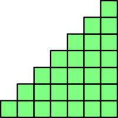
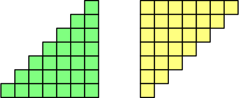
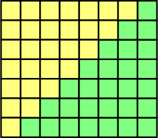

Sums¶
The results on this page work for any integer $n \ge 1$.
Sum of positive integers up to $n$¶
Let's calculate $$ 1 + 2 + 3 + \dots + n. $$ Suppose that this drawing has $n$ rows of squares. It actually has 7 rows, but this also works for any other value of $n$.

The top row contains 1 square, the one below that contains 2 squares, and so on. Finally, the bottom row contains 7 squares. For this reason, the total number of squares in the drawing is $1 + 2 + \dots + n$. Alternatively, the leftmost column contains 1 square, the one to the right from it contains 2 squares, and the rightmost column contains $n$ squares.
Let's make a rotated copy of the drawing...

...and move the copies together:

We now have a rectangle with $n+1$ squares horizontally (e.g. $n$ yellow squares and $1$ green square in top row) and $n$ squares vertically. That is a total of $n(n+1)$ squares. Exactly half of the squares are green, so the number of green squares is half of the total number of squares. On the other hand, we started with $1+2+\dots+n$ green squares.
$$ 1+2+\dots+n = \frac{n(n+1)}{2} $$
Finite Backward Difference¶
For any function $f$ defined for integer inputs, let $$ \nabla f(n) = f(n)-f(n-1). $$ This is known as the finite backward difference of $f$. For example, $$ \nabla n^2 = n^2 - (n+1)^2 = n^2 - (n^2-2n+1) = 2n-1. $$ This operation behaves somewhat like a derivative. With a derivative, we have $\frac{d}{dx}x^2 = 2x$, but we got $2n-1$ instead of just $2n$. To see connection, recall that the derivative is $$ f'(x) = \lim_{h \to 0} \frac{f(x+h)-f(x)}{h}, $$ while the finite backward difference is the same thing with $h=-1$ and without a limit, $$ \begin{align} \frac{f(x+(-1))-f(x)}{-1} &= \frac{f(x-1)-f(x)}{-1} \\ &= -(f(x-1)-f(x)) \\ &= f(x)-f(x-1). \end{align} $$ The derivative and finite backward difference are ways to figure out how fast the values of a function grow, but they do it differently. If $n$ and $x$ represent time as seconds and $f$ represents your location, then the finite difference tells how much you moved during the previous second while the derivative tells your current moving speed.
These rules for finite difference are very similar to some derivative rules, and they can be proved just like the derivative rules: $$ \begin{align} \nabla (f(n)+g(n)) &= \nabla f(n) + \nabla g(n) \\ \nabla (f(n)-g(n)) &= \nabla f(n) - \nabla g(n) \\ \nabla (cf(n)) &= c \cdot \nabla f(n) \\ \nabla c &= 0 \\ \nabla n &= 1 \\ \nabla(cn) &= c \end{align} $$ Not all derivative rules apply to the finite difference. For example, $\Delta n^2 \ne 2n$ like we saw above.
Sum of positive integers up to $n$ (again)¶
The square drawing derivation above works for $1+2+\dots+n$, but it doesn't generalize nicely for e.g. $1^2+2^2+\dots+n^2$. For that reason, we'll derive the formula for $1+2+\dots+n$ again in a different way, using the finite difference.
Above we got $$ \nabla n^2 = 2n-1, $$ and that's why $$ \nabla\left( \frac{1}{2} n^2 \right) = \frac{1}{2}(2n-1) = n - \frac{1}{2}. $$ To get rid of $-\frac{1}{2}$, we need to add $+\frac{1}{2}$ to the result of the finite difference. We can do that by adding $+\frac{1}{2}n$ before taking the finite difference; that is, $$ \nabla\left( \frac{1}{2} n^2 + \frac{1}{2}n \right) = \nabla\left( \frac{1}{2} n^2 \right) + \nabla\left( \frac{1}{2} n \right) = n-\frac{1}{2}+\frac{1}{2} =n. $$ In other words, by letting $$ f(n) = \frac{1}{2} n^2 + \frac{1}{2}n = \frac{n(n+1)}{2}, $$ we get $1 = f(1)-f(0)$, $2 = f(2)-f(1)$ and so on. Now we can calculate $$ \begin{align} 1+2+\dots+n &= \quad f(1)-f(0) \\ &\quad +f(2)-f(1) \\ &\quad +f(3)-f(2) \\ &\quad +f(4)-f(3) \\ &\quad +f(5)-f(4) \\ &\quad +\dots \\ &\quad +f(n-1)-f(n-2) \\ &\quad +f(n)-f(n-1), \end{align} $$ and after canceling diagonally, we are left with $$ 1+2+\dots+n = f(n)-\underbrace{f(0)}_0 = \frac{n(n+1)}{2}. $$
Sum of squares¶
Let's calculate $$ 1^2 + 2^2 + \dots + n^2. $$ We'll do this similarly to the previous derivation. We start with $$ \nabla n^3 = n^3-(n-1)^3 = n^3-(n^3-3n^2 1+3n 1^2-1^3) = 3n^2-3n+1, $$ where we used the formula for $(a-b)^3$ (TODO). This leads to $$ \nabla\left( \frac{1}{3} n^3 \right) = \frac{1}{3}(3n^2-3n+1) = n^2-n+\frac{1}{3}. $$ Because $\nabla \frac{n(n+1)}{2} = n$ (see previous derivation) and $\nabla (\frac{1}{3}n) = \frac{1}{3}$, we get $$ \begin{align} \nabla\left( \frac{1}{3} n^3 + \frac{n(n+1)}{2} - \frac{1}{3}n \right) &= n^2-n+\frac{1}{3} + n - \frac{1}{3} = n^2. \end{align} $$ Just like in the previous derivation, we get $$ \frac{1}{3} n^3 + \frac{n(n+1)}{2} - \frac{1}{3}n = 1^2+2^2+\dots+n^2. $$ Usually this formula is instead written as $$ \frac{n(n+1)(2n+1)}{6}, $$ which is a different way to write what we got, because $$ \begin{align} \frac{n(n+1)(2n+1)}{6} &= \frac{(n^2+n)(2n+1)}{6} \\ &= \frac{n^2(2n+1)+n(2n+1)}{6} \\ &= \frac{2n^3+n^2+2n^2+n}{6} \\ &= \frac{2n^3+3(n^2+n)-2n}{6} \\ &= \frac{2}{6}n^3 + \frac{3}{6}(n^2+n) - \frac{2}{6}n \\ &= \frac{1}{3}n^3 + \frac{n^2+n}{2} - \frac{1}{3}n. \end{align} $$
$$ 1^2+2^2+\dots+n^2 = \frac{n(n+1)(2n+1)}{6} $$